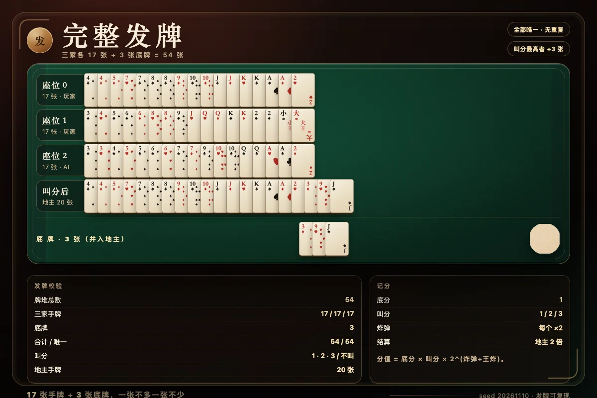
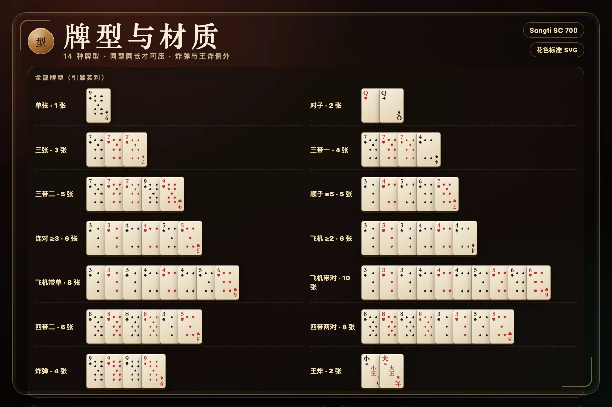

斗地主规则与牌型大全：叫分、压牌、记分与常见问题
斗地主是三人玩的扑克游戏：一人当地主，另外两人是农民。它看起来只是「谁大谁压」，真正的难点在叫分、记牌与农民配合。本文按一副 54 张牌从发牌讲到结算，并把容易判错的牌型逐条列清楚。

一、牌与发牌
斗地主使用一副扑克牌，去掉大小王之外的 52 张再加上小王、大王，共 54 张。四种花色各 13 张，点数从 3 到 2；两张王单独计算，小王小于大王。发牌时每人 17 张，剩下 3 张扣在桌上作为底牌。17 × 3 + 3 = 54，正好用完一副牌，不多不少。
牌力顺序为：3 < 4 < 5 < 6 < 7 < 8 < 9 < 10 < J < Q < K < A < 2 < 小王 < 大王。花色不参与大小比较，同样点数的四张牌完全等价；只有组成炸弹时，四张同点才具有特殊意义。
发牌必须洗匀。网页版使用共享的种子化 Fisher–Yates 洗牌：先生成 54 张牌的固定牌堆，再按 51 次交换打乱，最后 3 张留作底牌。同一个种子会得到完全相同的发牌结果，方便复盘与自动化测试；正式对局使用系统加密随机源，不使用 Math.random。
二、叫分与抢地主
发牌后进入叫分阶段，从随机一位玩家开始按顺序进行，每人只能说一次：不叫，或者叫 1 分、2 分、3 分。后叫的人必须叫得比当前最高分更高，不能重复叫同一个分数，也不能叫更低的分。有人叫到 3 分时立即结束，3 分是最高叫分。
三个人都表完态后，叫分最高的人成为地主，拿走桌上的 3 张底牌，手牌变成 20 张，并由地主先出牌。其余两人自动组成农民方，彼此是队友。如果三家都不叫，这一局作废，重新洗牌发牌，由下一位玩家先叫；网页版会自动重发，并把重发次数记录在对局数据里。
叫分的本质是估值：双王、天然炸弹、长顺子和连对会让手牌结构更整齐，值得叫高分；只有零散大牌、缺少组合时应当保守。叫到 3 分意味着你愿意用最高的底分乘数承担地主风险，因此不要只看「有没有大王」，要看整手牌能不能在二十张内形成两到三个稳定的出牌轮次。
三、全部牌型
斗地主的牌型必须完整成立，不能「差不多就行」。下面这张表是本实现实际判定的全部牌型，牌型名称、张数约束与示例一一对应。
| 牌型 | 张数 | 成立条件与示例 |
|---|---|---|
| 单张 | 1 | 任意一张，例如 ♠9。 |
| 对子 | 2 | 两张同点，例如 ♥Q ♣Q。 |
| 三张 | 3 | 三张同点，例如 ♠7 ♥7 ♦7。 |
| 三带一 | 4 | 三张加任意一张单牌，例如 777 + 4；带的牌不能与三张同点。 |
| 三带二 | 5 | 三张加一个对子，例如 777 + 99。 |
| 顺子 | ≥5 | 连续单牌，3 到 A，例如 3 4 5 6 7；不能含 2 或王。 |
| 连对 | ≥6 | 三对以上连续对子，例如 33 44 55；同样不能含 2 或王。 |
| 飞机 | ≥6 | 两组以上连续三张，例如 333 444；机身不能含 2 或王。 |
| 飞机带单 | 4n | n 组连续三张加 n 张单牌，翅膀不能用机身点数。 |
| 飞机带对 | 5n | n 组连续三张加 n 个对子，对子也不能与机身同点。 |
| 四带二 | 6 | 四张加两张单牌，两张单牌可以同点，例如 8888 + 3 5 或 8888 + 33。 |
| 四带两对 | 8 | 四张加两个不同对子，例如 8888 + 33 55。 |
| 炸弹 | 4 | 四张同点，例如 ♠9 ♥9 ♣9 ♦9，属于特殊牌型。 |
| 王炸 | 2 | 小王加大王，最大牌型，任何情况都能压。 |
容易判错的地方有三个。第一，顺子和连对的上限是 A，(2) 不能进入顺子，王更不能；第二，飞机的翅膀不能用机身点数，例如 333444 再带 3 和 4 不成立；第三，四带二不是炸弹，四带两对也不是炸弹，它们只是普通牌型，炸弹仍然可以压它们。
四、压牌、过牌与重新领出
一轮由上一手出牌开始。轮到的人可以选择出牌或不要：出牌必须与上一手同牌型、同张数，并且主牌点数更大。例如上一手是对 7，你只能出对 8 或更大的对子，不能出单 8，也不能出三张。顺子、连对、飞机等组合还要求长度一致：上一手是五张顺子，你就只能出五张顺子，六张顺子不算压过。
炸弹是例外：炸弹可以压任意普通牌型，不管对方出的是单张、顺子还是飞机；炸弹之间比较四张牌的点数，点数更大的炸弹胜。王炸最大，压过包括炸弹在内的一切牌型。炸弹与王炸还会让本局倍数翻倍，因此何时交炸是斗地主最核心的取舍之一。
如果选择不要，就跳过这一轮。两家连续不要之后，上一手出牌的人重新获得自由出牌权，此时不受上一手牌型和张数限制，可以出任何合法牌型。网页版会在两家不要后清空桌面上的「上一手」标记，并提示谁重新领出。
注意：自由出牌时不能选择不要，必须至少出一手牌。这是引擎里的硬性校验，避免用「空过」拖住牌局。
五、胜负与记分
谁先把手里的牌全部出完，谁就为所在的一方赢下这一局。地主先出完，地主胜；任意一名农民先出完，两名农民一起获胜。地主是一人对抗两名农民，因此结算时地主按两倍收付，每名农民各按一倍收付。
本实现的分值公式是：分值 = 底分 × 叫分 × 2 的炸弹次数。底分默认是 1，叫分是 1、2 或 3，每出现一个炸弹或王炸，倍数再乘 2。例如底分 1、叫 2 分、出现 1 个炸弹，本局分值就是 1 × 2 × 2 = 4 分；地主赢则地主 +8，两名农民各 −4。页面上的记分卡会同时展示底分、叫分、炸弹数、倍数与最终分值，方便核对。
叫分越高，收益与风险同时放大；炸弹越多，翻倍越猛。领先时不要为了压一手小牌提前交炸，落后时则可以用炸弹抢回出牌权，把节奏重新握在自己手里。

六、农民配合与实战要点
农民是队友，不是各自为战。队友出牌时，如果你手里没有明显的压制需求，优先让队友继续领出；队友只剩一两张时更不要抢他的牌。反过来，当地主只剩一两张时，农民要尽量用更大的单牌顶住，哪怕拆对子也值得，因为让地主顺手走完就是直接输掉这一局。
记牌从 2、A、王开始，这几张决定了残局谁能拿到出牌权。其次记炸弹：某个点数四张都没出现，就要提防对手藏着炸弹。高手 AI 也会用「未见牌」做推断：把自己手牌、已经打出的牌从整副牌里扣掉，估算对手可能持有的炸弹与王炸，但不会读取对手手牌。
首出时优先走长牌型，把散牌留到有牌权时再处理。手里只剩两手时，先算清楚「这一手出什么、下一手怎么走完」，再决定要不要接牌。不要把炸弹当成普通大牌随手交掉；它是翻倍器，也是最后一手保险。
七、常见问题
三家都不叫怎么办？
本局作废，重新洗牌发牌，由下一位玩家先叫。网页版自动重发，并在对局记录中显示重发次数，不会卡在叫分阶段。
炸弹和王炸谁更大？
王炸最大，压过包括炸弹在内的一切牌型。炸弹可以压任意普通牌型，炸弹之间比较四张牌的点数，点数大的炸弹更大。
顺子可以带 2 和王吗？
不可以。顺子、连对和飞机的机身只能使用 3 到 A，不能包含 2、小王或大王。顺子至少五张，连对至少三对，飞机至少两组三张。
两家不要之后谁出牌？
两家连续不要后，上一手出牌的人重新获得自由出牌权，可以出任何合法牌型，不受上一手牌型和张数限制。
地主和农民怎么算分？
本实现按底分 × 叫分 × 2 的炸弹次数计算本局分值。地主一人对两名农民，地主按两倍收付，每名农民各按一倍收付；地主先出完则地主赢，任一农民先出完则农民方赢。
飞机带单的翅膀可以用机身点数吗？
不可以。飞机的机身是连续的三张，翅膀必须是机身之外的点数；带单时每组的单牌也不能再取机身点数，否则牌型判定会失败。
八、本页对应实现的边界
网页版是完整规则，不是简化版：54 张牌、17/17/17 + 3 底牌、1/2/3 分叫地主、全部十四种牌型、炸弹与王炸、两家不要重置、地主对两农民的结算都已实现。三档 AI 分别使用随机合法出牌、启发式拆牌与未见牌推断；对手手牌和底牌身份不会下发给客户端，联机模式由服务端权威判定。
页面上的牌面由代码绘制：点数是标准点阵，花色使用标准 SVG 路径，中文与牌面字符使用 Songti SC Bold(700) 渲染；AI 只生成空白纸材、牌背、台呢与筹码材质，不画文字和数字，避免模型把牌面画错。